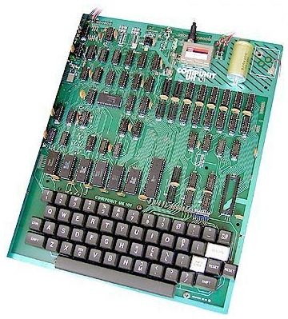

|
| Return to index |
 The Compukit UK101 was a single-board computer from the early days of hobby computing in the late 1970's and early 1980's. It had a 6502 processor running at 1Mhz and a small amount of RAM, usually 4K or 8K bytes.
There was a full size, reasonable quality proper keyboard for input; video output, as was common for hobby computers at the time, was got by hooking up to a standard TV set and program storage was via a 300 baud cassette tape interface. The machine was essentially a clone of the Ohio Superboard II from the US company OSI but was modified to work rather better with the UK TV standard.
Like most machines of the time it had a BASIC interpreter available in ROM and an additional "monitor" ROM with provided the bootstrap functions and basic I/O facilities.
The Compukit UK101 was sold by as a kit from the Compshop in New Barnet and originally cost about £219.00. It was first published and described as a series of articles in the magazine Practical Electronics starting in June 1979 and was supported by the magazine for a good few years.
The Compukit UK101 was the first computer I owned and I still have it
somewhere in my loft.
One day I will get it out and get it working again.
The UK101 was a very simple machine, apart from the 6502 processor, a 6850 asynchronous communications controller and RAM and ROM chips, just about everything was built from standard TTL logic - there were no custom ICs at all. The was an 'expansion' socket on the PCB (the big empty socket on the right above the keyboard in the picture above) that provided access to all the address bus and data bus lines plus various other control signals, allowing, in theory, a range of additional hardware to be plugged in.
The 6502 could address 64kB of RAM and everything on the machine was memory-mapped into that address space:
| 0x0000 onwards |
Start of RAM
The standard machine came with 4K of RAM but there were sockets on the PCB to allow up to 8K to be installed (in 1K increments). Since the next thing in memory was at address 0xA000, in theory, with a suitable expansion board, you could have up to 40K of RAM installed - this would have been rather expensive in 1979! |
| 0xA000 to 0xBFFF |
The BASIC ROM
This was 8K and was actually in 4 2K ROMs (as a single 8K ROM wasn't available at any reasonable price). However the PCB could support a single 8K ROM if one became available leaving 3 empty sockets for potential use by other ROM software. |
| 0xD000 to 0xD3FF |
The video RAM
The standard machine had 1K of video RAM arranged as 16 rows of 64 characters, although due to the simple video display circuitry (there was no custom video chip remember) not all those 64 characters could be seen on a standard TV. You normally got about 48 characters displayed which curiously were not the first or last 48 from the line but 48 starting from somewhere in the middle, usually starting at about 13 characters in. |
| 0xDF00 | The Keyboard
The keyboard was mapped as a single byte. The keys were arranged in an 8x8 matrix and to read the keyboard you had to write a 'column' byte to the keyboard port and read back a 'row' byte. Using the written 'column' value and the returned 'row' value you could determine which key or keys was pressed. The monitor contained routines to do this and decode the key to its ASCII character value. |
| 0xF000 and 0xF001 |
The Cassette port
This was actually the status and data ports of the 6850 ACIA, which was used to drive the simple cassette interface. No interrupts were used so you had to poll the status port when reading or writing the cassette to see when data was available. |
| 0xF800 to 0xFFFF |
The Monitor ROM
The top 2K was the monitor which contained some basic machine operating routines - such as reading and decoding the keyboard and reading and writing characters to and from the cassette interface. |
Because of the simple nature of the hardware, it was very easy to modify the machine. Some very common modifications included:
There was an on-board power supply (it just needed an external transformer), but it was under-rated and the voltage regulator chip was prone to failing. So it was quite common to remove it and use a rather better external power supply.
The 6502 had a 1μs cycle time and used a 1MHz external clock to generate it, however most CPUs could run quite happily at faster clock speeds. Since the UK101 had all its clock signals derived from a single 8MHz timer it was easy to find a 2MHz signal and attach it to the CPU clock pin, effectively doubling the machine speed.
It was relatively simple to double the video RAM to 2K and then display 32 lines instead of the standard 16, which was a very useful extension.
The standard cassette interface ran at 300 baud which was reliable but pretty slow. It was simple to double this to 600 and even double again to 1200, as long as you used a decent quality tape recorder - running the CPU at 2MHz also helped a lot when trying to get 1200 baud to work reliably.
Quite a lot of additional information can be found by searching the internet for "Compukit UK101". A few good starting places include:
By the way, although the UK101 was the first machine I owned, the first machine I did any programming on was an Elliott 803. You can find my simulation of that machine here.
| Tim Baldwin February 2011 tjb101@tinymail.co.uk |
Return to index
© Tim Baldwin 2010,2014 |